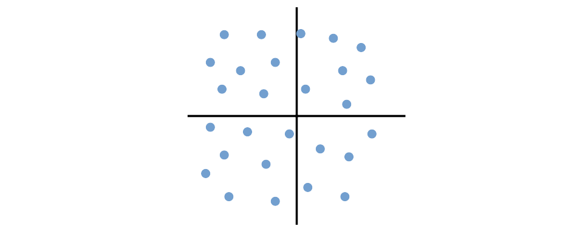

AINoon Lesson 3
Get Ready for AINoon!
- Open technoon.org/ainoon
- Log in with a free account to zapier.com
Thanks
- To the host for the great venue!
- To our sponsors
Administrivia
- Fire escapes
- Toilets
- Cleaning up after ourselves
- WiFi
Common Patterns for AI Apps
- Retrieval Augmented Generation (RAG)
- Tools
- Agents
You may not use all of these patterns yourself, but understanding what’s possible will enable you to spot opportunities.
Most AI apps are surprisingly simple
Clever preparation of prompt/context
+
GenAI model to generate text, images, etc.
+
+
Clever use of model outputs
Clever use of model outputs
Retrieval Augmented Generation (RAG)
- Problem: LLMs can answer questions about general knowledge from training data, but have no knowledge of your domain/company
- Expensive solution: Continue to train (“fine-tune”) the model on your own text
- Pragmatic solution: Retrieve relevant text and add it to augment the prompt
Selecting relevant text for RAG
- Break up documents into chunks of text
-
When a user’s question comes in, search for relevant
chunks of text
- Usually by finding chunks with the most similar “meaning” to the question according to a specialised text embedding model
- Add relevant chunks to the prompt



Challenges with RAG
- Getting accurate knowledge sources
- Garbage in, garbage out
- Configuring search to find the best chunks
- Ensuring chunks include all relevant context
Tools - Expanding LLM Capabilities


Key idea: The LLM decides when to call a tool
Examples of Tools
- Fetch data:
- Web or document search (RAG tools)
- Run code (e.g. to analyse a spreadsheet)
- Fetch data from a system (e.g. task management)
- Ask human for input (e.g. review a decision)
- Take action:
- Write to a file
- Send a message
- Update data in a system
Providing Tools to a Chatbot
- Many chatbots have built-in tools, or allow you to
provide your own
- E.g. You can enable Web Search in ChatGPT
- Many systems now provide an MCP
server that provides tools in a standard format for any AI app
- E.g. An MCP server for files on your computer allows the LLM to read/write any file it chooses
Agents / Agentic AI
Vague term with lots of meanings, but one useful definition is:
An LLM agent runs tools in a loop to achieve a goal - Simon Willison
(so that tool example was technically an agent)
Example of an Agent


Examples of Agents
- Deep Research for extensive web searches (ChatGPT)
- NotebookLM for research and study (Google)
- Copilots that automate tasks in apps (e.g. Outlook, Excel)
- GitHub Copilot, Claude Code, and Aider for writing code
- As one part in an automation workflow (e.g. n8n workflows)
Tutorial Objectives
Let’s build that movie desserts agent!
- Set up a table to store the dessert ideas
- Configure the agent instructions and tools
- Test the agent!
We’ll also use Zapier’s “copilot” agents along the way to help us make the table and agent!
Homework
- Try ChatGPT’s Think longer (reasoning) mode:
- “Make a plan to increase visitors to my website”
- Compare level of detail with/without reasoning
- Try ChatGPT’s Deep Research agent:
- “Find a cheap washing machine for a family of four”
- Searches the web and summarises in a few minutes
- Extend your Desserts agent into a multi-agent
system:
- Make a new Recipe agent that takes a dessert description and generates a recipe for it
- Use the Call an agent tool from your Desserts agent to call the Recipe agent for each dessert description
- Add a
Recipelong-text column to your table so that the Desserts agent can include the recipe in each row- Remove and re-add the Zapier Tables tool to see the new column